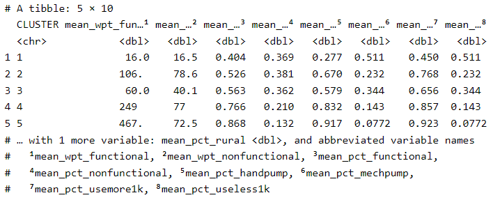

pacman::p_load(rgdal, spdep, tmap, sf, ggpubr, cluster, factoextra, NbClust, heatmaply, corrplot, psych, tidyverse, funModeling, ClustGeo, GGally)Take-home Exercise 2: Regionalisation of Multivariate Water Point Attributes with Non-spatially Constrained and Spatially Constrained Clustering Methods
Setting the Scene
The process of creating regions is called regionalisation. A regionalisation is a special kind of clustering where the objective is to group observations which both similar in their statistical attributes and spatial location. Regionalisation uses the same logic as standard clustering techniques, but additionally applies a series of geographical constraints: which often relate to connectivity, i.e. two candidates can only be grouped together in the same region if there exists a path from one member to another member that never leaves the region. These paths often model the spatial relationships in the data, such as contiguity or proximity. However, connectivity does not always need to hold for all regions, and in certain contexts it makes sense to relax connectivity or to impose different types of geographic constraints.
Objectives
In this exercise, we will regionalise Nigeria by using the following measures:
Total number of functional water points
Total number of nonfunctional water points
Percentage of functional water points
Percentage of non-functional water points
Percentage of main water point technology (i.e. Hand Pump)
Percentage of usage capacity (i.e. < 1000, >=1000)
Percentage of rural water points
Importing Libraries
Before we get started, it is important for us to install the necessary R packages into R and launch these R packages into R environment.
The R packages needed for this exercise are as follows:
Spatial data handling
- sf, rgdal and spdep
Attribute data handling
- tidyverse, especially readr, ggplot2 and dplyr
Choropleth mapping
- tmap
Exploratory data analysis, data preparation and model performance
- funModeling
Multivariate data visualisation and analysis
- coorplot, ggpubr, heatmaply and GGally
Cluster analysis
cluster
ClustGeo
The code chunks below installs and launches these R packages into R environment.
Data Import and Preparation
Data
Two data sets will be used:
geo_export.shp: Nigeria Level-2 Administrative Boundary (also known as Local Government Area) polygon features GIS data will be used in this take-home exercise. The data can be downloaded either from The Humanitarian Data Exchange portal or geoBoundaries.
nga_admbnda_adm2_osgof_20190417 DBF: WPdx+ data set from WPdx Global Data Repositories will be used.
Data Importing
st_read()of sf package is used to import geo_export shapefile into R environment and save the imported geospatial data into simple feature data table.filter()of dplyr package is used to extract water point records of Nigeria.
wp <- st_read(dsn = "data",
layer = "geo_export",
crs = 4326) %>%
filter(clean_coun == "Nigeria")Next, write_rds() of readr package is used to save the extracted sf data table (i.e. wp) into an output file in rds data format. The output file is called wp_nga.rds and it is saved in data sub-folder.
write_rds(wp, "data/wp_nga.rds")Now, we are going to import the LGA boundary data into R environment by using the code chunk below.
nga <- st_read(dsn = "data",
layer = "nga_admbnda_adm2_osgof_20190417",
crs = 4326)Data Wrangling
Data wrangling is the practice of changing or deleting inaccurate, damaged, improperly formatted, duplicate, or incomplete data from a dataset. Data is often incorrectly categorized or duplicated when we merge multiple data sources. This is
Removing duplicated area names (if any)
With the code chunk below, we will first order our dataframe by alphabetical order based on ADM2_EN. We will then use the duplicated function to retrieve all the ADM2_EN that has duplicates and store it in a list.
nga <- (nga[order(nga$ADM2_EN), ])
nga<- nga %>%
mutate(ADM2_EN = tolower(ADM2_EN))
duplicate_area <- nga$ADM2_EN[ nga$ADM2_EN %in% nga$ADM2_EN[duplicated(nga$ADM2_EN)] ]
duplicate_areaWe have identified 12 ADM2_EN that are duplicates.
Using the code chunk below, we find out the index numbers of these duplicated values so that we can update the names subsequently.
which(nga$ADM2_EN %in% c("bassa", "ifelodun", "irepodun", "nasarawa", "obi", "surulere"))Using the code chunk below, we access Nigeria data frame individual index to differentiate these 12 ADM2_EN by including their state name (captured in ADM1_EN). In addition, we will use length() to eliminate all duplicates.
nga$ADM2_EN[c(94,95,304,305,355,356,519,546,547,693,694)] <- c("bassa kogi","bassa plateau",
"ifelodun kwara","ifelodun osun",
"irepodun kwara","irepodun osun",
"nassarawa","obi benue","obi nasarawa",
"surulere lagos","surulere oyo")
length((nga$ADM2_EN[ nga$ADM2_EN %in% nga$ADM2_EN[duplicated(nga$ADM2_EN)] ]))Projection of sf dataframe
In the code chunk below, replace_na() of tidyr package is used to recode all the NA values in status_cle and water_te_2 fields into “Unknown”.
wp_nga <- read_rds("data/wp_nga.rds") %>%
mutate(status_cle = replace_na(status_cle, "Unknown")) %>%
mutate(water_te_2 = replace_na(water_te_2, "Unknown"))Exploratory data analysis (EDA)
Distribution of Water Tap Status
In the code chunk below, freq() of funModeling package is used to display the distribution of status_cle field in wp_nga.
freq(data = wp_nga,
input = "status_cle")Distribution of Functional Waterpoints
The code chunk below uses filter() of dplyr package to select functional water points and freq() to show the distribution:
wpt_functional <- wp_nga %>%
filter(status_cle %in%
c("Functional",
"Functional but not in use",
"Functional but needs repair"))
freq(data= wpt_functional,
input = "status_cle")Distribution of Non-functional Waterpoints
The code chunk below uses filter() of dplyr package to select non-functional water points and freq() to show the distribution:
wpt_nonfunctional <- wp_nga %>%
filter(status_cle %in%
c("Abandoned/Decommissioned",
"Abandoned",
"Non-Functional",
"Non functional due to dry season",
"Non-Functional due to dry season"))
freq(data= wpt_nonfunctional,
input = "status_cle")Distribution of Water Technology
freq(data = wp_nga,
input = "water_te_2")Majority use Hand Pumps, followed by mechanized pumps and least use tapstand.
Using the code chunk below, filter() of dplyr package is used to select water points with main water point technology (hand pumps, mechanized pumps and others):
wpt_handpump <- wp_nga %>%
filter(water_te_2 %in%
c("Hand Pump",
"Hand Pump - Afridev",
"Hand Pump - India Mark II",
"Hand Pump - India Mark III",
"Hand Pump - Mono",
"Hand Pump - Rope Pump"))
wpt_mechpump <- wp_nga %>%
filter(water_te_2 %in%
c("Mechanized Pump",
"Mechanized Pump - Diesel",
"Mechanized Pump - Solar"))
wpt_others <- wp_nga %>%
filter(water_te_2 %in%
c("Rope and Bucket",
"Unknown"))Distribution of Usage Capacity
In the code chunk below, we use filter() of dplyr to select usage capacity (i.e. <1000, >= 1000), and freq() of funModeling package to determine their distribution.
wpt_useless1k <- wp_nga %>%
filter(usage_cap < 1000)
wpt_usemore1k <- wp_nga %>%
filter(usage_cap >= 1000)
freq(data = wp_nga,
input = "usage_cap")26.99% of waterpoints have a usage cap of 1000, while majority of 72.4% have a usage cap of 300 and 0.6% with usage cap of 250.
Extracting rural water points
We use filter() of dplyr is used to select rural water points:
wpt_rural <- wp_nga %>%
filter(is_urban == "False")
wpt_urban <- wp_nga %>%
filter(is_urban == "True")freq() of funModeling package is used to determine the distribution in the code chunk below:
freq(data = wp_nga,
input = "is_urban")Only 20.59% of the waterpoints are urban.
Point-in-polygon count
Although wp_nga sf data frame consists of a field called #clean_adm2 which by right should provide the LGA name of the water point located, it is always a good practice to be more caution when dealing with data accuracy.
In this section, we are going to use a geoprocessing function (or commonly know as GIS analysis) called point-in-polygon overlay to transfer the attribute information in nga sf data frame into wp_sf data frame.
wp_nga <- st_join(wp_nga, nga)Note that a new field, ADM2_ENx has been added into wp_nga sf data frame below:
The code chunk below will create a new data frame nga_wp to store the newly-derived variables.
nga_wp <- nga %>%
mutate(`total wpt` = lengths(
st_intersects(nga, wp_nga))) %>%
mutate(`wpt functional` = lengths(
st_intersects(nga, wpt_functional))) %>%
mutate(`wpt non-functional` = lengths(
st_intersects(nga, wpt_nonfunctional))) %>%
mutate(`wpt handpump` = lengths(
st_intersects(nga, wpt_handpump))) %>%
mutate(`wpt mechpump` = lengths(
st_intersects(nga, wpt_mechpump))) %>%
mutate(`wpt useless1k` = lengths(
st_intersects(nga, wpt_useless1k))) %>%
mutate(`wpt usemore1k` = lengths(
st_intersects(nga, wpt_usemore1k))) %>%
mutate(`wpt rural` = lengths(
st_intersects(nga, wpt_rural)))Saving the analytical data
mutate() of dplyr package is used to drive the 7 fields in the code chunk below:
nga_wp <- nga_wp %>%
mutate(`pct_functional` = `wpt functional` / `total wpt`) %>%
mutate(`pct_non-functional` = `wpt non-functional`/ `total wpt`) %>%
mutate(`pct_handpump` = `wpt handpump`/ `total wpt`) %>%
mutate(`pct_mechpump` = `wpt mechpump`/ `total wpt`) %>%
mutate(`pct_useless1k` = `wpt useless1k`/ `total wpt`) %>%
mutate(`pct_usemore1k` = `wpt usemore1k`/ `total wpt`) %>%
mutate(`pct_rural` = `wpt rural`/ `total wpt`)Next, write_rds() of readr package is used to save the extracted sf data table into an output file in rds data format, and saved in the data sub-folder.
write_rds(nga_wp, "data/nga_wp.rds")Assigning EPSG code to the simple feature data frame
A common issue when importing geospatial data into R is that the coordinate system of the source data could be either missing (such as due to missing .proj for ESRI shapefile) or wrongly assigned during the importing process.
Using the code chunk below, we will examine the current coordinate system of nga_wp simple feature data frame by using st_crs() of sf package.
st_crs(nga_wp)Note: The nga_wp data frame is projected in WGS84 but the result above shows that the EPSG is 4326. However, the correct EPSG code for WGS84 should be 26391, 26392, or 26303.
Thus, we need to use the code chunk below to assign the correct EPSG code to nga_wp data frame, using st_transform() of sf package.
nga_wp26391 <- st_transform(nga_wp,
crs = 26391)Using st_crs(), we can check to confirm the CRS has been changed correctly:
st_crs(nga_wp26391)Next, write_rds() of readr package is used to save the extracted sf data table into an output file in rds data format, and saved in the data sub-folder.
write_rds(nga_wp26391, "data/nga_wp26391.rds")Exploratory Data Analysis (EDA)
Statistical graphics
Using ggplot, we can plot the distribution of the variables on histograms to see the skew in the data.
nga_wp <- read_rds("data/nga_wp26391.rds")wp_f <- ggplot(data=nga_wp,
aes(x=`wpt functional`)) +
geom_histogram(bins=20,
color="black",
fill="blue")
pct_f <- ggplot(data=nga_wp,
aes(x=`pct_functional`)) +
geom_histogram(bins=20,
color="black",
fill="blue")
wp_nf <- ggplot(data=nga_wp,
aes(x=`wpt non-functional`)) +
geom_histogram(bins=20,
color="black",
fill="light blue")
pct_nf <- ggplot(data=nga_wp,
aes(x=`pct_non-functional`)) +
geom_histogram(bins=20,
color="black",
fill="light blue")
pct_handp <- ggplot(data=nga_wp,
aes(x=`pct_handpump`)) +
geom_histogram(bins=20,
color="black",
fill="red")
pct_mechp <- ggplot(data=nga_wp,
aes(x=`pct_mechpump`)) +
geom_histogram(bins=20,
color="black",
fill="pink")
pct_useless1k <- ggplot(data=nga_wp,
aes(x=`pct_useless1k`)) +
geom_histogram(bins=20,
color="black",
fill="blue")
pct_usemore1k <- ggplot(data=nga_wp,
aes(x=`pct_usemore1k`)) +
geom_histogram(bins=20,
color="black",
fill="light blue")
pct_urban <- ggplot(data=nga_wp,
aes(x=`pct_rural`)) +
geom_histogram(bins=20,
color="black",
fill="green")ggarrange(wp_f, pct_f, wp_nf, pct_nf, pct_handp, pct_mechp, pct_useless1k, pct_usemore1k, pct_urban,
ncol = 2,
nrow = 5)Choropleth map
A choropleth map is useful to help us take a look at the distribution of functional and non-functional water points at town level, using qtm() of tmap package.
Functional Waterpoints
wpt.f.map <- tm_shape(nga_wp) +
tm_fill(col = "wpt functional",
n = 5,
style = "jenks",
title = "Functional WP") +
tm_borders(alpha = 0.5)
wpt.pct_f.map <- tm_shape(nga_wp) +
tm_fill(col = "pct_functional",
n = 5,
style = "jenks",
title = "Percentage of Functional WP ") +
tm_borders(alpha = 0.5)
tmap_arrange(wpt.f.map, wpt.pct_f.map,
asp=NA, ncol=2)Observation from Functional Water point choropleth maps: Towns with more functional waterpoints (Functional WP map) have higher percentage of functional waterpoints (Percentage of Functional WP map).
Non-functional Waterpoints
wpt.nf.map <- tm_shape(nga_wp) +
tm_fill(col = "wpt non-functional",
n = 5,
style = "jenks",
title = "Non-Functional WP") +
tm_borders(alpha = 0.5)
wpt.pct_nf.map <- tm_shape(nga_wp) +
tm_fill(col = "pct_non-functional",
n = 5,
style = "jenks",
title = "Percentage of Non-Functional WP ") +
tm_borders(alpha = 0.5)
tmap_arrange(wpt.nf.map, wpt.pct_nf.map,
asp=NA, ncol=2)Observation from Non-functional Water point choropleth maps: Similarly, towns with more non-functional waterpoints (Non-functional WP map) have higher percentage of non-functional waterpoints (Percentage of Non-functional WP map).
Correlation Analysis
Before we perform cluster analysis, it is important for us to ensure that the cluster variables are not highly correlated.
Before doing the cluster analysis, we need to first remove all NaN values by assigning them to 0.
nga_wp$pct_functional[is.nan(nga_wp$pct_functional)] <- 0
nga_wp$`pct_non-functional`[is.nan(nga_wp$`pct_non-functional`)] <- 0
nga_wp$pct_handpump[is.nan(nga_wp$pct_handpump)] <- 0
nga_wp$pct_mechpump[is.nan(nga_wp$pct_mechpump)] <- 0
nga_wp$pct_useless1k[is.nan(nga_wp$pct_useless1k)] <- 0
nga_wp$pct_usemore1k[is.nan(nga_wp$pct_usemore1k)] <- 0
nga_wp$pct_rural[is.nan(nga_wp$pct_rural)] <- 0Now, we can use corrplot.mixed() function of corrplot package to visualise and analyse the correlation of the input variables.
nga_wp_derived <- nga_wp %>%
st_set_geometry(NULL) %>%
select(c(18:19,25:31))
head(nga_wp_derived)cluster_vars.cor = cor(nga_wp_derived)
corrplot.mixed(cluster_vars.cor,
lower = "ellipse",
upper = "number",
tl.pos = "lt",
diag = "l",
tl.col = "black")Observations:
High positive correlation (> 0.8) between pct_handpump and pct_useless1k
High negative correlation (<-0.8) between pct_mechpump and pct_useless1k
Perfect correlation (1) between pct_mechpump and pct_usemore1k
Hierarchy Cluster Analysis
Extracting clustering variables
The code chunk below will be used to extract the clustering variables from the shan_sf simple feature object into data.frame.
cluster_vars <- nga_wp %>%
st_set_geometry(NULL) %>%
select("ADM2_EN", c(18:19,25:31))
head(cluster_vars,5)Next, we need to change the rows by town names instead of row number by using the code chunk below:
row.names(cluster_vars) <- cluster_vars$"ADM2_EN"
head(cluster_vars,5)Using the code chunk below, we will now delete the “ADM2_EN’ field.
nga_wp_pct <- select(cluster_vars, c(2:10))
head(nga_wp_pct, 5)
Data Standardisation
In general, multiple variables will be used in cluster analysis. It is not unusual their values range are different. In order to avoid the cluster analysis result is baised to clustering variables with large values, it is useful to standardise the input variables before performing cluster analysis.
Min-Max standardisation
In the code chunk below, normalize() of heatmaply package is used to stadardisation the clustering variables by using Min-Max method. The summary() is then used to display the summary statistics of the standardised clustering variables.
nga_wp_pct.std <- normalize(nga_wp_pct)
summary(nga_wp_pct.std)Notice that the values range of the Min-max standardised clustering variables are 0 to 1 now.
Z-score standardization
Z-score standardization can be performed easily by using scale() of Base R. The code chunk below will be used to standardization the clustering variables by using Z-score method.
nga_wp_pct.z <- scale(nga_wp_pct)
describe(nga_wp_pct.z)Notice the mean and standard deviation of the Z-score standardized clustering variables are 0 and 1 respectively.
Note: describe() of psych package is used here instead of summary() of Base R because the earlier provides standard deviation.
Visualizing the standardized clustering variables
Beside reviewing the summary statistics of the standardized clustering variables, it is also a good practice to visualize their distribution graphical.
The code chunk below plot the scaled wpt_functional, wpt_non-functional fields. The other variables with percentages (pct_XX) already have existing values between 0 to 1 and thus can be omitted to plot here.
nga_wp_std_df <- as.data.frame(nga_wp_pct.std)
nga_wp_z_df <- as.data.frame(nga_wp_pct.z)existing_wpf <- ggplot(data=nga_wp_derived,
aes(x= `wpt functional`)) +
geom_histogram(bins=20,
color="black",
fill="blue") +
ggtitle("wpt functional - Raw values without standardisation")
std_wpf <- ggplot(data=nga_wp_std_df,
aes(x=`wpt functional`)) +
geom_histogram(bins=20,
color="black",
fill="pink") +
ggtitle("wpt functional - Min-Max Standardisation")
z_wpf <- ggplot(data=nga_wp_z_df,
aes(x=`wpt functional`)) +
geom_histogram(bins=20,
color="black",
fill="light green") +
ggtitle("wpt functional - Z-score Standardisation")
existing_wpnf <- ggplot(data=nga_wp_derived,
aes(x= `wpt non-functional`)) +
geom_histogram(bins=20,
color="black",
fill="light blue") +
ggtitle("wpt non-functional - Raw values without standardisation")
std_wpnf <- ggplot(data=nga_wp_std_df,
aes(x=`wpt non-functional`)) +
geom_histogram(bins=20,
color="black",
fill="pink") +
ggtitle("wpt non-functional - Min-Max Standardisation")
z_wpnf <- ggplot(data=nga_wp_z_df,
aes(x=`wpt non-functional`)) +
geom_histogram(bins=20,
color="black",
fill="light green") +
ggtitle("wpt non-functional - Z-score Standardisation")
existing_handp <- ggplot(data=nga_wp_derived,
aes(x= `pct_handpump`)) +
geom_histogram(bins=20,
color="black",
fill="light blue") +
ggtitle("pct_handpump - Raw values without standardisation")
std_handp <- ggplot(data=nga_wp_std_df,
aes(x=`pct_handpump`)) +
geom_histogram(bins=20,
color="black",
fill="pink") +
ggtitle("pct_handpump - Min-Max Standardisation")
z_handp <- ggplot(data=nga_wp_z_df,
aes(x=`pct_handpump`)) +
geom_histogram(bins=20,
color="black",
fill="light green") +
ggtitle("pct_handpump - Z-score Standardisation")
ggarrange(existing_wpf, std_wpf, z_wpf, existing_wpnf, std_wpnf, z_wpnf, existing_handp, std_handp,z_handp,
ncol = 3,
nrow = 3)Computing proximity matrix
dist() of R supports six distance proximity calculations, they are: euclidean, maximum, manhattan, canberra, binary and minkowski. The default is euclidean proximity matrix.
The code chunk below is used to compute the proximity matrix using euclidean method.
proxmat <- dist(nga_wp_pct, method = "euclidean")Computing hierarchical clustering
In R, there are several packages including hclust() of R stats to provide hierarchical clustering function. hclust() employed agglomeration method to compute the cluster. 8 clustering algorithms are supported, they are: ward.D, ward.D2, single, complete, average(UPGMA), mcquitty(WPGMA), median(WPGMC) and centroid(UPGMC).
The code chunk below performs hierarchical cluster analysis using ward.D method. The hierarchical clustering output is stored in an object of class hclust which describes the tree produced by the clustering process.
hclust_ward <- hclust(proxmat, method = 'ward.D')We can then plot the tree by using plot() of R Graphics as shown in the code chunk below.
plot(hclust_ward, cex = 0.3)Selecting the optimal clustering algorithm
One challenge in performing hierarchical clustering is to identify stronger clustering structures. The issue can be solved by using use agnes() function of cluster package. It functions like hclus(), however, with the agnes() function you can also get the agglomerative coefficient, which measures the amount of clustering structure found (values closer to 1 suggest strong clustering structure).
The code chunk below will be used to compute the agglomerative coefficients of all hierarchical clustering algorithms.
m <- c( "average", "single", "complete", "ward")
names(m) <- c( "average", "single", "complete", "ward")
ac <- function(x) {
agnes(nga_wp_pct, method = x)$ac
}
map_dbl(m, ac)Observation: From the results above, the Ward’s method provides the strongest clustering structure among the 4 methods assessed. Hence, in the subsequent analysis, only Ward’s method will be used.
Determining Optimal Clusters
Another technical challenge face by data analyst in performing clustering analysis is to determine the optimal clusters to retain.
There are three commonly used methods to determine the optimal clusters, they are:
1. Elbow Method
Using fviz_nbclust(), we can plot the graph and determine optimal number of clusters, with wss method.
fviz_nbclust(nga_wp_pct, kmeans, method = "wss")From the elbow method, the optimal number of clusters would be 3, where the decrease is slowing.
2. Silhouette Method
Similarly, the code chunk below is used to determined optimal number of clusters using the silhouette method:
fviz_nbclust(nga_wp_pct, kmeans, method='silhouette')From the silhouette method, the optimal number of clusters would be 2.
3. Gap Statistic Method
The gap statistic compares the total within intra-cluster variation for different values of k with their expected values under null reference distribution of the data. The estimate of the optimal clusters will be value that maximize the gap statistic (i.e., that yields the largest gap statistic). This means that the clustering structure is far away from the random uniform distribution of points.
To compute the gap statistic, clusGap() of cluster package will be used. hcut function used is from factoextra package.
set.seed(12345)
gap_stat <- clusGap(nga_wp_pct,
FUN = hcut,
nstart = 25,
K.max = 10,
B = 50)
# Print the result
print(gap_stat, method = "firstmax")Next, we can visualise the plot by using fviz_gap_stat() of factoextra package.
fviz_gap_stat(gap_stat)With reference to the gap statistic graph above, the recommended number of cluster to retain is 1. However, it is not logical to retain only 1 cluster. Hence, we will use the next best value, which is 5.
Interpreting the dendograms
In the dendrogram displayed above, each leaf corresponds to one observation. As we move up the tree, observations that are similar to each other are combined into branches, which are themselves fused at a higher height.
The height of the fusion, provided on the vertical axis, indicates the (dis)similarity between two observations. The higher the height of the fusion, the less similar the observations are. Note that, conclusions about the proximity of two observations can be drawn only based on the height where branches containing those two observations first are fused.
It’s also possible to draw the dendrogram with a border around the selected clusters by using rect.hclust() of R stats. The argument border is used to specify the border colors for the rectangles.
plot(hclust_ward, cex = 0.3)
rect.hclust(hclust_ward,
k = 5,
border = 2:5)Visually-driven hierarchical clustering analysis
In this section, we will perform visually-driven hiearchical clustering analysis by using heatmaply package.
With heatmaply, we are able to build both highly interactive cluster heatmap or static cluster heatmap.
Transforming the data frame into a matrix
The data was loaded into a data frame, but it has to be a data matrix to make your heatmap. Using the code chunk below, we will transform nga_wp_pct data frame into a data matrix.
nga_wp_pct_mat <- data.matrix(nga_wp_pct)Plotting interactive cluster heatmap using heatmaply()
In the code chunk below, the heatmaply() of heatmaply package is used to build an interactive cluster heatmap.
heatmaply(normalize(nga_wp_pct_mat),
Colv=NA,
dist_method = "euclidean",
hclust_method = "ward.D",
seriate = "OLO",
colors = Blues,
k_row = 6,
margins = c(NA,200,60,NA),
fontsize_row = 4,
fontsize_col = 5,
main="Geographic Segmentation of Nigeria LGAs by Water Point Indicators",
xlab = "Water Point Indicators",
ylab = "LGAs of Nigeria"
)From the heatmap above, different clusters have different characteristics. Most of the LGAs are rural areas (deeper shades of blue occupying most plots, especially purple, green and yellow clusters). The purple cluster (at the top) has a high percentage of functional water points, as well as a high percentage of hand pumps.
Let’s continue further analysis to observe the different attributes in each cluster.
Mapping the clusters formed
With closed examination of the dendragram above, we have decided to retain 5 clusters.
cutree() of R Base will be used in the code chunk below to derive a 5-cluster model.
groups <- as.factor(cutree(hclust_ward, k=5))The output is called groups. It is a list object. In order to visualise the clusters, the groups object need to be appended onto shan_sf simple feature object.
The code chunk below form the join in three steps:
the groups list object will be converted into a matrix;
cbind() is used to append groups matrix onto nga_sf to produce an output simple feature object called
shan_sf_cluster; andrename of dplyr package is used to rename as.matrix.groups field as CLUSTER.
nga_wp_cluster <- cbind(nga_wp, as.matrix(groups)) %>%
rename(`CLUSTER`=`as.matrix.groups.`)Next, qtm() of tmap package is used to plot the choropleth map showing the cluster formed.
qtm(nga_wp_cluster, "CLUSTER")From the choropleth map, we can see that the clusters are very fragmented. This may be due to limitations of non-spatial clustering algorithm like hierarchical clustering analysis.
Spatially Constrained Clustering: SKATER approach
In this section, we will derive spatially constrained cluster by using skater() method of spdep package.
Converting into SpatialPolygonsDataFrame
First, we need to convert nga_wp_derived into SpatialPolygonsDataFrame. This is because SKATER function only support sp objects such as SpatialPolygonDataFrame.
The code chunk below uses as_Spatial() of sf package to convert nga_wp into a SpatialPolygonDataFrame called nga_wp_sp.
nga_wp_sp <- as_Spatial(nga_wp)Computing Neighbour List
Next, poly2nd() of spdep package will be used to compute the neighbours list from polygon list.
nga_wp.nb <- poly2nb(nga_wp_sp)
summary(nga_wp.nb)We can plot the neighbours list on nga_wp_sp by using the code chunk below. Since we now can plot the community area boundaries as well, we plot this graph on top of the map. The first plot command gives the boundaries. This is followed by the plot of the neighbor list object, with coordinates applied to the original SpatialPolygonDataFrame (Shan state township boundaries) to extract the centroids of the polygons. These are used as the nodes for the graph representation. We also set the color to blue and specify add=TRUE to plot the network on top of the boundaries.
plot(nga_wp_sp,
border=grey(.5))
plot(nga_wp.nb,
coordinates(nga_wp_sp),
col="blue",
add=TRUE)Note that if we plot the network first and then the boundaries, some of the areas will be clipped. This is because the plotting area is determined by the characteristics of the first plot. In this example, because the boundary map extends further than the graph, we plot it first.
Computing minimum spanning tree
Calculating edge costs
Next, nbcosts() of spdep package is used to compute the cost of each edge. It is the distance between it nodes. This function compute this distance using a data.frame with observations vector in each node.
The code chunk below is used to compute the cost of each edge.
lcosts <- nbcosts(nga_wp.nb, nga_wp_pct)For each observation, this gives the pairwise dissimilarity between its values on the five variables and the values for the neighbouring observation (from the neighbour list). Basically, this is the notion of a generalised weight for a spatial weights matrix.
Next, We will incorporate these costs into a weights object in the same way as we did in the calculation of inverse of distance weights. In other words, we convert the neighbour list to a list weights object by specifying the just computed lcosts as the weights.
In order to achieve this, nb2listw() of spdep package is used as shown in the code chunk below.
Note that we specify the style as B to make sure the cost values are not row-standardised.
nga_wp.w <- nb2listw(nga_wp.nb,
lcosts,
style="B")
summary(nga_wp.w)Computing minimum spanning tree
The minimum spanning tree is computed by mean of the mstree() of spdep package as shown in the code chunk below.
nga_wp.mst <- mstree(nga_wp.w)After computing the MST, we can check its class and dimension by using the code chunk below.
class(nga_wp.mst)Note that the dimension has been reduced by 1, because the minimum spanning tree consists on n-1 edges (links) in order to traverse all the nodes.
We can display the content of nga_wp.mst by using head() as shown in the code chunk below:
head(nga_wp.mst)The plot method for the MST include a way to show the observation numbers of the nodes in addition to the edge. As before, we plot this together with the township boundaries. We can see how the initial neighbour list is simplified to just one edge connecting each of the nodes, while passing through all the nodes.
plot(nga_wp_sp, border=gray(.5))
plot.mst(nga_wp.mst,
coordinates(nga_wp_sp),
col="blue",
cex.lab=0.5,
cex.circles=0.005,
add=TRUE)Computing spatially constrained clusters using SKATER method
The code chunk below compute the spatially constrained cluster using skater() of spdep package.
clust5 <- spdep::skater(edges = nga_wp.mst[,1:2],
data = nga_wp_pct,
method = "euclidean",
ncuts = 4)The skater() takes 3 mandatory arguments:
the first two columns of the MST matrix (i.e. not the cost),
the data matrix (to update the costs as units are being grouped), and
the number of cuts. Note: It is set to one less than the number of clusters. So, the value specified is not the number of clusters, but the number of cuts in the graph, one less than the number of clusters.
The result of the skater() is an object of class skater. We can examine its contents by using the code chunk below.
str(clust5)The most interesting component of this list structure is the groups vector containing the labels of the cluster to which each observation belongs (as before, the label itself is arbitary). This is followed by a detailed summary for each of the clusters in the edges.groups list. Sum of squares measures are given as ssto for the total and ssw to show the effect of each of the cuts on the overall criterion.
We can check the cluster assignment by using the conde chunk below.
ccs5 <- clust5$groups
ccs5We can find out how many observations are in each cluster by means of the table command. Parenthetially, we can also find this as the dimension of each vector in the lists contained in edges.groups. For example, the first list has node with dimension 8, which is also the number of observations in the first cluster.
table(ccs5)Lastly, we can also plot the pruned tree that shows the five clusters on top of the townshop area.
plot(nga_wp_sp, border=gray(.5))
plot(clust5,
coordinates(nga_wp_sp),
cex.lab=.7,
groups.colors=c("red","green","blue", "brown", "yellow"),
cex.circles=0.005,
add=TRUE)Visualising the clusters in choropleth map
The code chunk below is used to plot the newly derived clusters by using SKATER method.
groups_mat <- as.matrix(clust5$groups)
nga_wp_spatialcluster <- cbind(nga_wp_cluster, as.factor(groups_mat)) %>%
rename(`SP_CLUSTER`=`as.factor.groups_mat.`)
qtm(nga_wp_spatialcluster, "SP_CLUSTER")For easy comparison, it will be better to place both the hierarchical clustering and spatially constrained hierarchical clustering maps next to each other.
hclust.map <- qtm(nga_wp_cluster,
"CLUSTER") +
tm_borders(alpha = 0.5)
shclust.map <- qtm(nga_wp_spatialcluster,
"SP_CLUSTER") +
tm_borders(alpha = 0.5)
tmap_arrange(hclust.map, shclust.map,
asp=NA, ncol=2)Spatially Constrained Clustering: ClustGeo Method
In this section, we will use functions provided by ClustGeo package to perform non-spatially constrained hierarchical cluster analysis and spatially constrained cluster analysis.
Ward-like hierarchical clustering: ClustGeo
ClustGeo package provides function called hclustgeo() to perform a typical Ward-like hierarchical clustering just like hclust() you learned in previous section.
To perform non-spatially constrained hierarchical clustering, we only need to provide the function a dissimilarity matrix as shown in the code chunk below.
nongeo_cluster <- hclustgeo(proxmat)
plot(nongeo_cluster, cex = 0.5)
rect.hclust(nongeo_cluster,
k = 5,
border = 2:5)Mapping the clusters formed
Similarly, we can plot the clusters on a categorical area shaded map by using the steps we performed in the above section: Mapping the clusters formed.
groups <- as.factor(cutree(nongeo_cluster, k=5))nga_wp_ngeo_cluster <- cbind(nga_wp, as.matrix(groups)) %>%
rename(`CLUSTER` = `as.matrix.groups.`)qtm(nga_wp_ngeo_cluster, "CLUSTER")Spatially Constrained Hierarchical Clustering
Before we can performed spatially constrained hierarchical clustering, a spatial distance matrix will be derived by using st_distance() of sf package.
dist <- st_distance(nga_wp, nga_wp)
distmat <- as.dist(dist)Notice that as.dist() is used to convert the data frame into matrix.
Next, choicealpha() will be used to determine a suitable value for the mixing parameter alpha as shown in the code chunk below.
cr <- choicealpha(proxmat, distmat, range.alpha = seq(0, 1, 0.1), K=5, graph = TRUE)Based on the results shown above, we will use an alpha value of 0.1.
clustG <- hclustgeo(proxmat, distmat, alpha = 0.1)Next, cutree() is used to derive the cluster object.
groups <- as.factor(cutree(clustG, k=5))Using the code chunk below, we will then join back the group list with nga_wp polygon feature data frame.
nga_wp_Gcluster <- cbind(nga_wp, as.matrix(groups)) %>%
rename(`CLUSTER` = `as.matrix.groups.`)Now, we will plot the map of newly delineated spatially constrained clusters.
qtm(nga_wp_Gcluster, "CLUSTER")
Visual Interpretation of Clusters
Visualising individual clustering variable
Code chunk below is used to reveal the distribution of 4 clustering variables (wpt functional, wpt non-functional, pct functional wp and pct non-functional wp) by cluster.
a <- ggplot(data = nga_wp_ngeo_cluster,
aes(x = CLUSTER, y = `wpt.functional`)) +
geom_boxplot()
b <- ggplot(data = nga_wp_ngeo_cluster,
aes(x = CLUSTER, y = `wpt.non.functional`)) +
geom_boxplot()
c <- ggplot(data = nga_wp_ngeo_cluster,
aes(x = CLUSTER, y = `pct_functional`)) +
geom_boxplot()
d <- ggplot(data = nga_wp_ngeo_cluster,
aes(x = CLUSTER, y = `pct_non.functional`)) +
geom_boxplot()
ggarrange(a,b,c,d,
ncol = 2,
nrow = 2)Based on the box plots above, Cluster 5 seems to be the most well-equipped with the highest median of functional waterpoints and highest median of percentage of functional waterpoints.
This is followed by Cluster 4, Cluster 2 and then Cluster 3.
Cluster 1 is on the other end of the spectrum, with the lowest median of functional water points and the lowest median of percentage of functional waterpoints.
Multivariate Visualisation
Past studies shown that parallel coordinate plot can be used to reveal clustering variables by cluster very effectively. In the code chunk below, ggparcoord() of GGally package
ggparcoord(data = nga_wp_ngeo_cluster,
columns = c(25:28,29:31),
scale = "globalminmax",
alphaLines = 0.05,
boxplot = TRUE,
title = "Multiple Parallel Coordinates Plots of Water Point Variables by Cluster") +
facet_grid(~ CLUSTER) +
theme(axis.text.x = element_text(angle = 45))The parallel coordinate plot above reveals that households in Cluster 5 LGAs has the best maintained waterpoints with the highest median for percentage of functional waterpoints, with majority being mechanized pumps in rural areas.
Clusters 2 and 4 also have relatively high median percentage of functional water points and relatively low median percentage of non-functional water points, which suggests that these 2 clusters do not have much issues with its water points.
Cluster 1 and 3 which have a relatively higher median for percentage of non-functional waterpoints also have a relatively higher percentage of water points using hand pumps and higher percentage of usage over 1000. The government may want to prioritise improvements in functionality of the water points in Clusters 1 and 3. We could perhaps infer that the hand pumps might break down more quickly than mechanized pumps, especially with higher usage, thus we could recommend the replacement to mechanized pumps for the water points to be functional for a longer time.
Note that the scale argument of ggparcoor() provide several methods to scale the clustering variables. They are:
std: univariately, subtract mean and divide by standard deviation.
robust: univariately, subtract median and divide by median absolute deviation.
uniminmax: univariately, scale so the minimum of the variable is zero, and the maximum is one.
globalminmax: no scaling is done; the range of the graphs is defined by the global minimum and the global maximum.
center: use uniminmax to standardize vertical height, then center each variable at a value specified by the scaleSummary param.
centerObs: use uniminmax to standardize vertical height, then center each variable at the value of the observation specified by the centerObsID param
Computing summary statistics
Last but not least, we can also compute the summary statistics such as mean, median, sd, etc to complement the visual interpretation.
In the code chunk below, group_by() and summarise() of dplyr are used to derive mean values of the clustering variables.
nga_wp_ngeo_cluster %>%
st_set_geometry(NULL) %>%
group_by(CLUSTER) %>%
summarise(mean_wpt_functional = mean(wpt.functional),
mean_wpt_nonfunctional = mean(wpt.non.functional),
mean_pct_functional = mean(pct_functional),
mean_pct_nonfunctional = mean(pct_non.functional),
mean_pct_handpump = mean(pct_handpump),
mean_pct_mechpump = mean(pct_mechpump),
mean_pct_usemore1k = mean(pct_useless1k),
mean_pct_useless1k = mean(pct_usemore1k),
mean_pct_rural = mean(pct_rural))
Acknowledgements
For data preparation:
Ong, J. (2022, November). Bringing Data to Life - Geospatial Analytics for Social Good - Understanding Nigeria Water functional and non-functional water point rate. https://jordan-isss624-geospatial.netlify.app/posts/geo/geospatial_exercise/
For analysis methods:
Kam, T. (2022, December 6). R for Geospatial Data Science and Analytics - 5 Geographical Segmentation with Spatially Constrained Clustering Techniques. https://r4gdsa.netlify.app/chap05.html